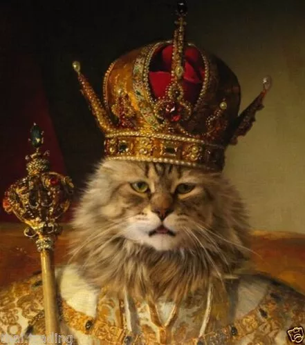

| Füsioloogia: | Ajalugu: | Käitumine: |
|---|---|---|
| 😻 Kassi aju kaalub umbes 31,4 g. | 😻 Kassi kodustamine sai alguse Vana-Egiptuses umbes 2000 eKr. | 😻 Kassid magavad peamiselt päeval ja öösiti peavad jahti. |
| 😻 Kassi normaalne kehatemperatuur on 38.1 °C. | 😻 Vana-Egiptuses peeti kasse kui pühi loomi. | 😻 Ööpäevas magab kass umbes 16 tundi, mõned võivad magada ka 20 tundi. |
| 😻 Kass elab tavaliselt 10-12 aastat, maksimaalselt 20 aastat. | 😻 Kassi kodustamine sai alguse Vana-Egiptuses umbes 2000 eKr | 😻 Kassidele meeldib oma saagiga mängida. |